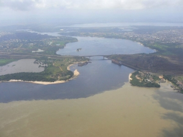
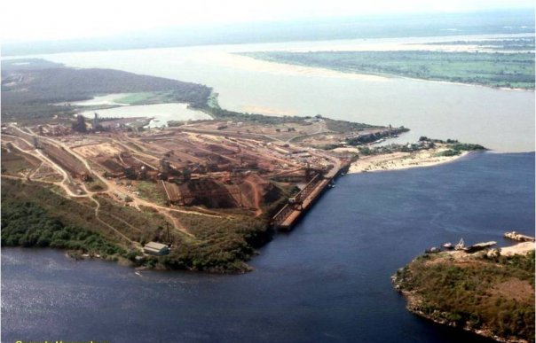

Orinoco en Venezuela, representa la fuente de la vida, es el más grande y caudaloso de esta nación, parte de sus 2140 km recorren 17 de los 23 estados venezolanos (Amazonas, Bolívar, Mérida, Trujillo, Apure, Táchira, Lara, Portuguesa, Barinas, Cojedes, Carabobo, Yaracuy, Guárico, Aragua, Anzoátegui, Delta Amacuro y Monagas). El río Caroní, no tan amplio y caudaloso como el primero, sigue siendo uno de los principales ríos del país, es el segundo de mayor caudal y alcanza los 952 km de longitud (desde el tepuy Kukenán, hasta su confluencia con el Orinoco). Lo que tienen ambos ríos en común (apartando la tierra en la que habitan) es el espectáculo visual que nos brindan a locales y extranjeros: la supuesta confluencia entre ambos ríos. Digo supuesta, porque ambas aguas se someten a riña entre sí, hasta que el Orinoco resulta ganador por ser el más caudaloso, se podría decir que este titán latinoamericano no recorre 2140 km por nada.
Abraham Mora, químico de la Estación de Investigaciones Hidrobiológicas de Guayana (Edihg) de La Fundación La Salle de San Félix, explicó en una entrevista para el Correo del Orinoco, que la composición propia de cada río es la que hace posible la diferenciación entre el color de las aguas cuando se juntan y el magnífico espectáculo.
Comenta que el Orinoco nace en el Cerro Delgado Chalbaud del estado Amazonas y a lo largo de su recorrido va acumulando sedimentos provenientes de otros ríos que se encuentran en su cauce y ese es el origen de su coloración amarillenta; explica que por su parte el Caroní es de color oscuro porque contiene altas concentraciones de ácidos húmicos y fúlvicos. "Son ácidos orgánicos producto de la descomposición de la hojarasca que viene de todo lo que es el Escudo Guayanés y la Amazonia". Las diferencias entre ambos ríos se pueden ver reflejadas en ciertos aspectos como los niveles de acidez (pH) y conductividad (diferencia entre los sólidos totales suspendidos), esto le da al Orinoco la característica de ser más denso y por supuesto de tener una mayor temperatura. Se podría decir que la diferencia entre las temperaturas de ambos ríos es apenas de 2°C, pero si pasas la mano de un río al otro, se puede notar el contraste fácilmente; dicha diferencia entre la temperatura también establece una diferencia de densidades entre uno y otro.